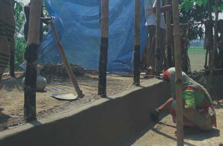
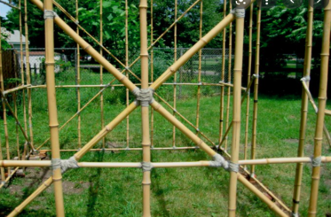
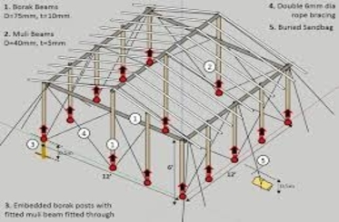

Architecture to tackle housing problem in elevated terrain
PLINTH
-
For soil with more than 40% sandy-silty particles, 5% cement additive is adequate.
-
For soil with less sandy content, sand has to be added to raise the content above 40%
and may require a somewhat higher proportion of cement additive.
-
Soil should be crushed and sieved into a fine form and cement in the right proportion to
be added in dry state. Moistened with water and should be immediately used. Wet mixture
left unused for too long becomes unusable as it begins to set and harden.
-
At least 3 weeks curing by water should be done. Can be covered by jute sacks to keep
moist and water poured at regular intervals to avoid drying.
-
Capping the plinth with cement stabilized earth is cheaper, easier to construct and
maintain. Complete stabilized earth plinth is more expensive and harder to construct,
but the results are more.
-
A stabilized plinth (right) resists water much better than an unstabilized one (left)
Note how the left plinth is trying to be protected with polythene sheets Infill should
be of cement-stabilized soil to prevent muddiness, settlement due to saturation and loss
of soil from below.
-
Soil cover on the foundation should be thoroughly compacted and should preferably have
plant or grassy cover to prevent scouring during flood.
-
Locally known as “dowa-posta”, a brick perimeter wall around the typical earthen plinth
resists erosion from the sides.
-
If soil is too weak or loose, the foundation of the perimeter wall should penetrate to
sufficient depth, preferably with a spread
-
Since very little load is imposed on the wall, the footing can be constructed with brick
without the need for a concrete footing.
-
Minimum 1:4 cement-sand mix should be used.
-
Soil cover on the foundation should be thoroughly compacted and should preferably have
plant or grassy cover to prevent scouring during flood.
-
Infill should be of cement-stabilized soil to prevent muddiness, settlement due to
saturation and loss of soil from below
-
4 inch cement concrete base slab @ 1:5:10 = cement : sand : aggregate (brick chips, 1½
inch nominal size).
-
8. 1 inch cement concrete topping @ 1:2:4 = cement : sand : aggregate (fine brick
chips).
POSTS
-
Cheapest method for protecting from dampness lower end of bamboo/ timber posts typically
embedded into the ground.
-
Coating Lower Ends with Molten bitumen, Mobil or sump oil, or a combination of these can
be used.Should paint the lower end with brush or cloth and continue coating above plinth
level according to last flood level.
-
Provides mainly damp-proofing, does not prevent much insect or fungal attack. Extends
life of bamboo post by a couple of years or so.
-
For chemical preservative treatment of bamboo posts. Local method for protecting the
base of bamboo/ timber posts by supporting on concrete stumps embedded into the plinth
or ground and connecting them by MS (mild steel) clamps. Locally known as kaatla or
shiri.
-
Possible to reduce cost by 10% by making the kaatla partially hollow. Space can be
filled with sand earth before placing in the ground and strength is not compromised.

-
Greatest advantage is reduction of recurrent expenditure on replacing bamboo posts; a
bamboo post protected from the ground by kaatla lasts five years or longer, representing
more than double lifespan.
-
For a bamboo post supported on kaatla, it is better to paint lower end with bitumen for
additional dampproofing. Termite shield made of polythene or metal can be used in the
space between bottom of post and above kaatla top.
-
Polythene sheets to be spread on the ground and a 4-sided wooden shuttering placed
according to kaatla. dimensions, given below.
-
For each katla, at one end a 10-12 inch long ¼ inch thick MS flat bar to be placed in
position so
that after
casting it is embedded by 4-6 inch into the kaatla.
-
The bar should have two 3/ 8 inch holes towards the upper end to insert screws for
attaching the post, thus serving as a clamp Casting is to be done with a 1:4:4 (cement :
sand : aggregate – ½ inch brick chips) mix to make 5 inch x 4 inch x 2 feet kaatla.
-
Should use four steel 3/ 8 inch diameter re-bars, one at each corner, tied together with
¼ inch diameter stirrups @ 8-10 inch nominal spacing.
-
Length should be determined according to depth of penetration required into plinth and
ground according to local soil conditions and plinth height. Minimum 9 feet. More depth
of penetration required for weak, loose or wet soil.
-
Post section = 4 inch x 4 inch. Better to have a small spread footing for stability and
to avoid leaning over during flood. For attaching to roof structure, can have a 5/ 8
inch re-bar projecting 6-8 inch from top and embedded 6-8 inch into the post.
-
Re-bar can be bent around purlin for better grip. To prevent rust, the re-bar should be
painted with molten bitumen.
-
Can also use MS flat bar clamp (similar as in kaatla; see section 2.2.2) for screwing on
toroof structure. Casting is to be done with mix of 1:4:6 (cement : sand : aggregate – ½
inch brick chips) in horizontal position on the ground, using re-useable wooden
shuttering.
-
At least 3 weeks curing by water is necessary. Caution should be taken to avoid corner
chipping during handling and installation
WALLS
-
Detachable Lower Panels Made of cheap, perishable materials such as straw, reeds, rushes
or jutesticks. Replaced after wet season without affecting upper walls.
-
Chemical Treatment of Bamboo Mat Walls Simple chemical preservative treatment methods
for increasing the longevity of organic materials have been developed a long time ago
Increases cost by 20-25%, but can increase longevity by more than three or four times.
If untreated, bamboo mat walls do not last more than 4-5 years in outdoor conditions,
but after treatment lasts for 15-20 years.
-
For chemical preservative treatment of bamboo battens and mats, the simplest method is
to build a tank made of bricks and concrete, or at cheaper cost, lining an excavation in
the ground with polythene sheet, or cutting a cylindrical metal container (e.g. oil
drum) into half and welding them end-to-end (for other methods, see section 3.4).
-
A typical preservative can be prepared to be mixed in the tank in the following
proportions: Copper Sulphate 4%, Sodium Dichromate 4%, Boric Acid 2%, Water 90% = TOTAL
100%. The materials should preferably be freshly harvested, but dry ones can also be
treated. Bamboo battens and mats are to be first soaked in water for at least 24 hours
and then dried
-
They are then to be immersed completely in the chemical preservative solution for 24
hours. After soaking, the materials are to be raised above the tank and supported on
bamboo poles or timber battens so that excess chemicals can drip back into the tank and
can be re-used.
-
Then they are to be dried in an open shaded space for 1-2 days and then in sunshine for
3-4 days. Gloves or polythene bag covers to be worn to protect hands from chemicals
during the treatment process.
CROSS-BRACING
-
To increase stability and windresistance of the structural frame of bamboo-framed
houses, crossbracing with split bamboo sections should be done.
-
If a house become weakened at its base due to flood, cross-bracing helps to keep the
structure stable
-
Split bamboo sections used for cross-bracing should be treated with chemical
preservatives so that they do not decay easily and lose their strength. Instead of jute
or coir rope, nylon rope or good quality galvanized wire should be used for tying the
elements of the structural frame.

STRENGTHENING EARTHEN WALLS
-
For areas with heavy rainfall and flood, it is essential for earthen houses to have an
internal structural framework. After rainfall or flood recedes, earth cover that may get
washed away can be renewed without compromising the structural stability of the house.
-
Framework can be of bamboo or timber which should be treated against decay. Earth to be
used as plaster or daubing without serving as structural element. Adding cement to the
mud plaster stabilizes it and allows resisting erosion.
ROOFING
-
Roof pitch 30º- 40° to reduce effects of suction and uplift. Hipped instead of gable
roof. If gable, then ends tied down firmly to rest of structure. Lean-to should be
avoided.
-
Overhang ≤ 2’ - 6 ” , vents in roof and masonry parapet. RCC roof
provides superior protection, but heavy in earthquake. Need for adequately braced
vertical.
-
Rafters at recommended spacing. Cross-bracing in plane of roof and ceiling, and also for
openings, if any. Openings restricted in size. Strong connections between roof and
vertical structure. Metal straps, bolts with washers on both ends instead of simple
nails.
-
Adequate connections should be made with nylon rope or good quality galvanized wire
(instead of jute rope). Roofing elements should be connected properly: purlin to rafter,
rafter to wall plate, wall plate to posts.
